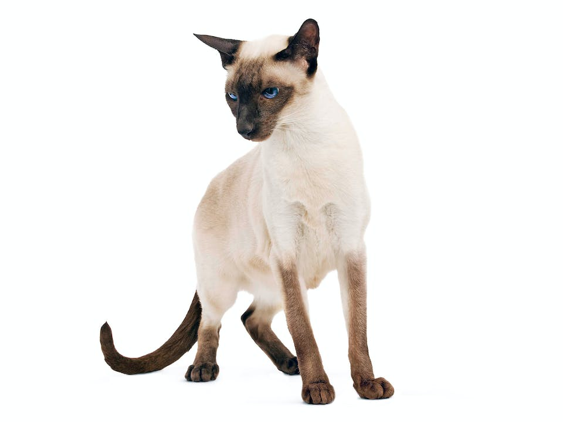
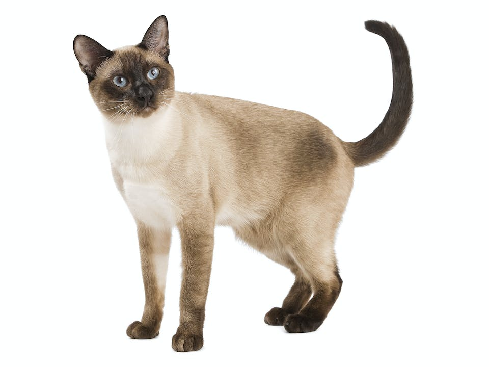
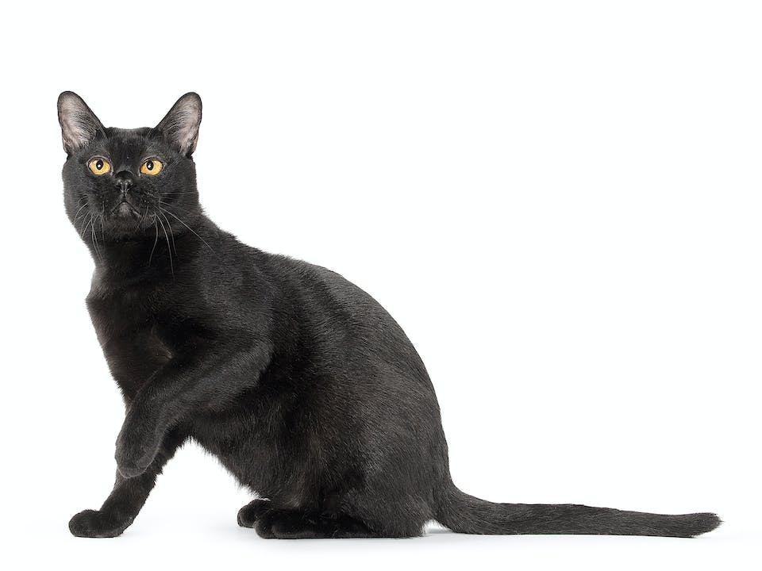
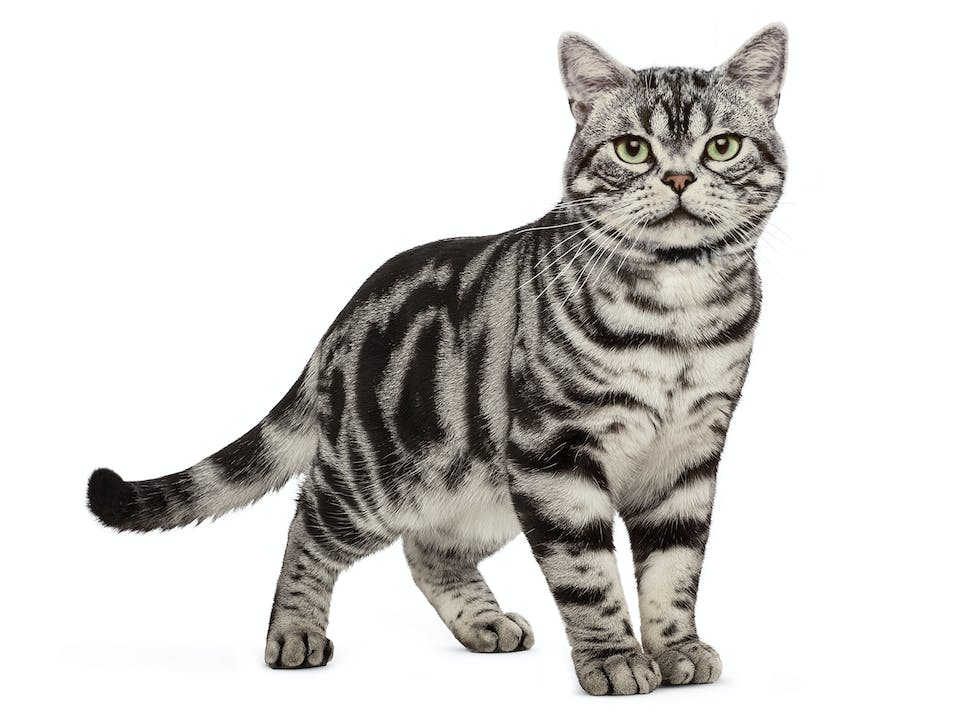
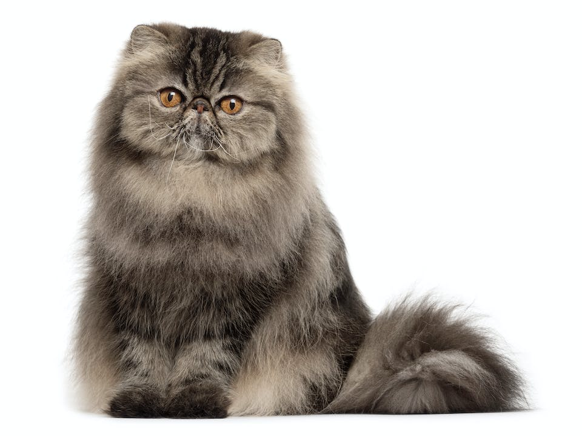
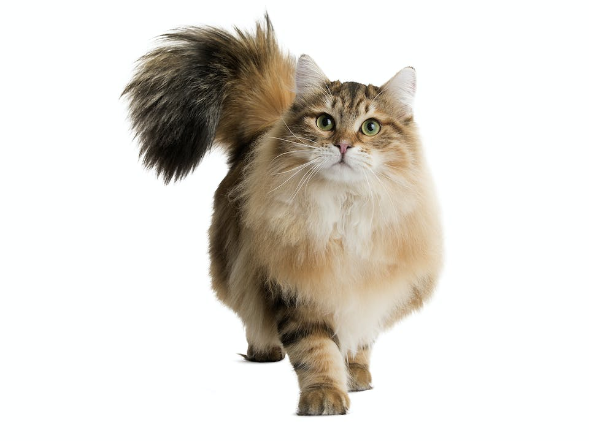

Principales razas de gatos.
La Asociación Internacional de Gatos contempla un estimado de 71 razas alrededor del mundo, aunque se dice que en realidad hay más de 250 variedades. Se presentan algunas razas adorables a continuación.
| Imagen. | Raza. | Características distintivas. | Colores y patrones. | Personalidad típica. |
|---|---|---|---|---|
|  | Siamés. | Delgado, elegante, con orejas grandes y cabeza triangular. | Color claro en cuerpo y extremidades, con puntos oscuros en orejas, cara, patas y cola. | Inteligente, vocal, cariñoso, apegado. |
|  | Siamés tradicional. | Delgado, pelaje corto, con orejas grandes y cabeza redonda. | Color claro en cuerpo y extremidades, con puntos oscuros en orejas, cara, patas y cola. | Inteligente, vocal, cariñoso, tranquilo. |
|  | Bombay. | Delgado, pelaje corto, cola larga y cabeza redonda. | Tono oscuro. | Inteligente, sociable, apacible, dependiente. |
|  | Americano. | Orejas cortas, pelaje corto y cabeza redonda. | Variedad de bicolores. | Enérgico, idenpendiente y sociable. |
|  | Persa. | Pequeño, robusto, de cabeza grande, y pelaje largo y denso. | Variedad de colores, incluyendo sólidos, bicolores y punteados. | Tranquilo, cariñoso, amante del confort. |
|  | Siberiano. | De ojos grandes, orejas medianas, cola tipo cepillo y pelaje largo y denso. | Variedad de colores, incluyendo sólidos, bicolores y punteados. | Juguetón, cariñoso, enérgicos. |
Para seguir explorando razas diríjase al siguiente link.